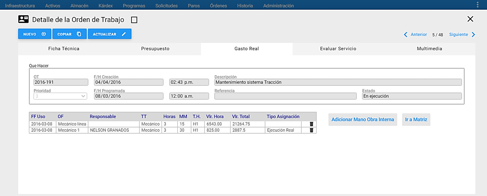
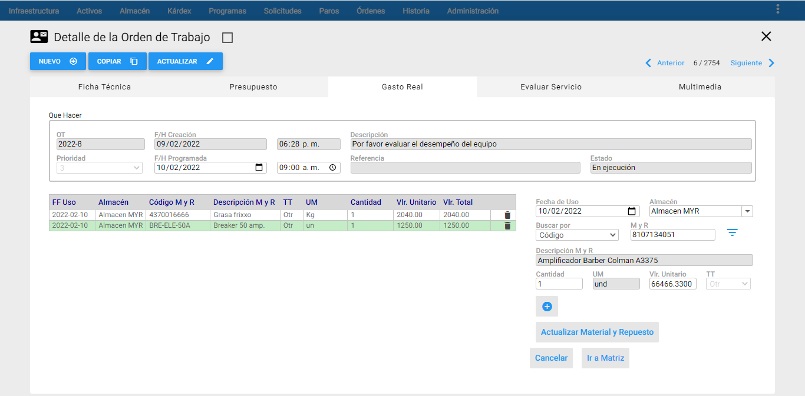
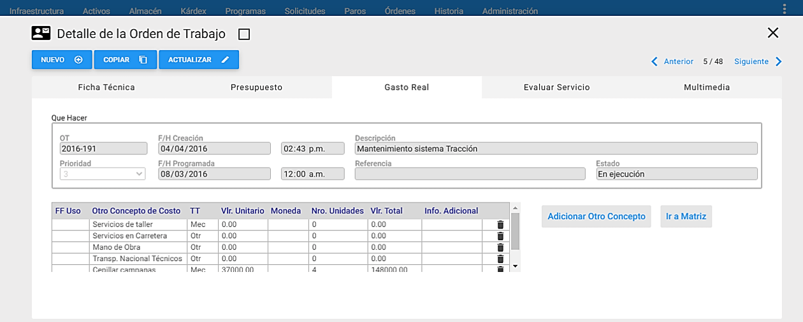
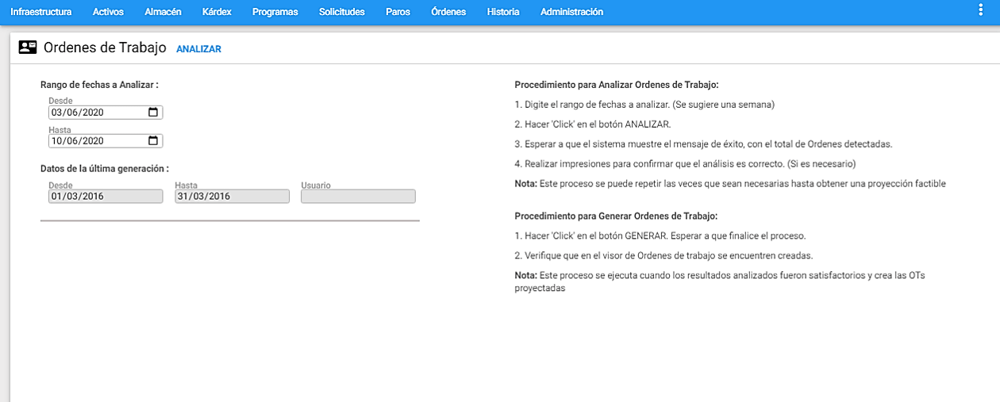
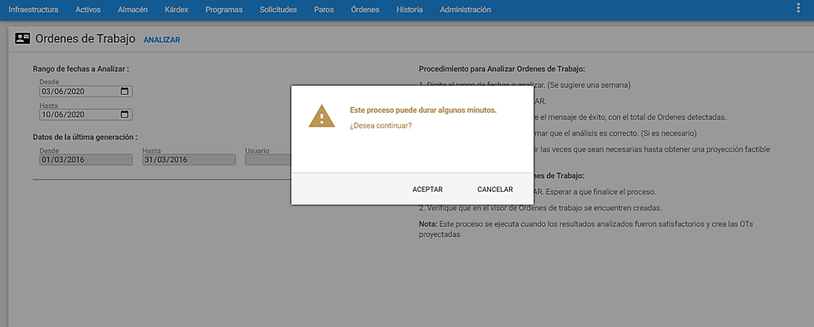
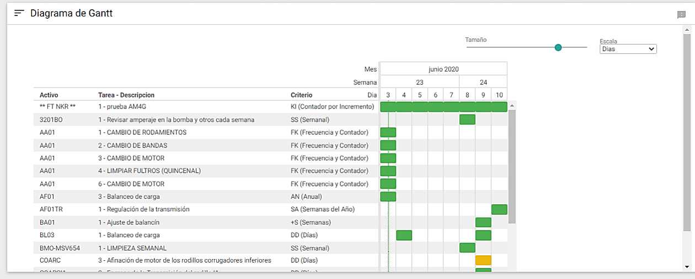

Este módulo permite la exportación de las Solicitudes de Servicio que aparecen en el visor, provenientes del subgrupo, a un archivo tipo texto llamado OS01.TXT, ubicado en la carpeta C:\TEMP de la estación cliente donde se realiza el proceso.

Enviar a Historia
El objetivo de esta transacción es desplazar hacia el módulo de Historia de Mantenimiento, las Solicitudes de Servicio preseleccionadas a través del subgrupo, es decir, los que se encuentran en el visor, que además tengan estado de Cerradas y residan todavía en el módulo de Solicitudes de Servicio. Los estados de Cierre que son tomados para este proceso son: Cerrada Ejecutada, Cerrada No Ejecutada y Cerrada con OT.

En la ventana aparece un botón Enviar y tres casillas de selección. Estas casillas de selección parametriza los registros que se desean enviar a Historia.
Todos los registros: Con esta opción se realiza el envío de todas las Solicitudes de Servicio existentes en la base de datos, sin importar cualquier subgrupo activo.
Registros del visor: Esta opción se realiza el envío de todas las Solicitudes de Servicio seleccionadas en el visor mediante un subgrupo.
Registro seleccionado: Esta opción realiza el envío de la Solicitud de Servicio que está resaltada en el visor (tiene la línea verde del cursor sobre sí).
Para enviar a Historia, se selecciona una de las opciones y se hace clic en el botónEnviar, entonces aparece la siguiente ventana:

Al finalizar el proceso de Enviar a Historia, sale el siguiente mensaje de confirmación:

En el caso de que NO existan Solicitudes de Servicio para ser enviadas, aparece el siguiente mensaje:

Reclasificar
El objetivo de esta transacción es realizar la reclasificación de las Solicitudes de Servicio generadas a una compañía no correspondiente a la labor requerida. Esta funcionalidad es aplicable para la versión Profesional de AM y está asociada a permisos de Usuarios.
Se da clic a la opción Reclasificar en la etiqueta Transacciones y aparece la siguiente ventana:

Se puede reclasificar una Solicitud de Servicio específica o varias Solicitudes de Servicio en el visor y en estado ** “En Análisis”.**
Para definir a que compañía se va a reclasificar la Solicitud de Servicio o las Solicitudes de Servicio, se escoge la compañía utilizando la lista desplegable del campo “Compañía Destino” el cual lista las compañías activas. Luego se da clic al botón Enviar, y este se encarga de transferir las Solicitudes de Servicio a su destino seleccionado. Es posible reclasificar solamente una Solicitud de Servicio seleccionada o reclasificar todas las Solicitudes de Servicio del visor, esto de acuerdo al botón seleccionado.
Modificar Masivamente
Esta transacción permite cambiar masivamente el Centro de Costo, la Ubicación Física, el Responsable y los Comentarios de las Solicitudes de Servicio previamente seleccionados en el Visor.

En la gráfica anterior, Modificar Masivamente, se aprecian sus componentes y sus respectivos contenidos.
A continuación se describen los campos que componen esta ventana de información adicional:
Modificar Centro de Costos: Se modifica masivamente el Centro de Costo, del o las Solicitudes de Servicio que están previamente seleccionadas en el visor.

Modificar Ubicación Física: Se modifica masivamente la Ubicación Física, de las Solicitudes de Servicio que están previamente seleccionadas en el visor.

Modificar Responsable: Se modifica masivamente el Responsable, de las Solicitudes de Servicio que están previamente seleccionadas en el visor.

Modificar Comentario: Se modifica masivamente los Comentarios de las Solicitudes de Servicio que están previamente seleccionadas en el visor.

Servicios
Reportes
 Los anteriores reportes pueden ser seleccionados para una o varias Solicitudes de Servicio:
Imprimir TODOS: Con esta opción se imprimen todos los reportes de las Solicitudes de Servicio existentes en la base de datos, sin importar si se ha realizado un subgrupo.
Imprimir el VISOR: Esta opción permite hacer una impresión de todos los reportes de las Solicitudes de Servicio que están seleccionadas en la Ventana Visor, es decir los registros que están seleccionados en el subgrupo actual.
Imprimir el SELECCIONADO: Esta opción permite hacer una impresión de la Solicitud de Servicio que esta seleccionada en la Ventana Visor (el cursor verde se encuentra sobre él).
El programa permite ordenar la impresión de los reportes de acuerdo con los siguientes criterios:
Clave Primaria: Según esta clave las alternativas son:
-
Fecha de Creación
-
Centro de Costo
-
Centro Responsable
-
Código del Responsable
Clave Secundaria: Según esta clave las alternativas son:
• Centro de Costo
• Código de la Solicitud
• Responsable
Clave Terciaria: Según esta clave las alternativas son:
-
Oficio
-
Código del Equipo
Información Adicional: En este campo puede escribirse alguna información importante que se desea salga impresa en el reporte. Este campo tiene una capacidad de 100 caracteres.